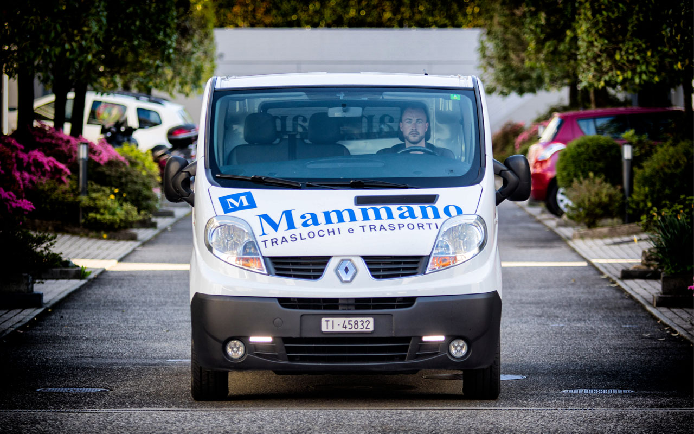

Traslochi internazionali dalla Svizzera.
Vi trasferite all'estero o rientrate in Ticino? Organizziamo il trasloco porta a porta verso Italia, Europa e resto del mondo, con un unico referente dall'inizio alla fine.
In breve
Mammano Traslochi organizza traslochi internazionali da e verso la Svizzera: su strada verso Italia ed Europa con mezzi propri e, per destinazioni extraeuropee, via mare o aereo con corrispondenti all'estero. Il servizio è porta a porta e parte da un sopralluogo gratuito.
Modalità di trasporto
La soluzione su misura per ogni destinazione.
Porta a porta
Cosa comprende un trasloco internazionale.
- Sopralluogo gratuito e preventivo con tempi e modalità di trasporto
- Imballaggio adatto a viaggi lunghi, anche per oggetti fragili e opere d'arte
- Smontaggio e rimontaggio dei mobili alla partenza e a destinazione
- Documenti doganali: vi aiutiamo a preparare quanto richiesto
- Deposito in Ticino se la consegna va rimandata

Domande frequenti
Domande sui traslochi internazionali.
Fate traslochi dalla Svizzera all'Italia?
Sì. I traslochi tra Ticino e Italia sono tra quelli che eseguiamo più spesso, su strada con mezzi e personale Mammano, con servizio porta a porta.
Serve una pratica doganale per un trasloco dalla Svizzera?
Sì. Uscendo o entrando in Svizzera i beni del trasloco vanno dichiarati in dogana. In genere, per i beni usati del proprio trasloco, non si pagano dazi, a condizione di presentare la documentazione richiesta. Durante il sopralluogo vi spieghiamo quali documenti preparare.
Quanto tempo richiede un trasloco internazionale?
Su strada in Europa bastano di solito pochi giorni. Via mare i tempi dipendono dalla destinazione e possono arrivare a diverse settimane. Vi diamo una stima precisa nel preventivo.
Posso trasferirmi dall'estero in Ticino con voi?
Sì, organizziamo anche traslochi verso il Ticino e il resto della Svizzera, con consegna e rimontaggio nella nuova casa.
Vi trasferite all'estero?
Diteci da dove partite e dove andate: vi proponiamo la soluzione migliore.